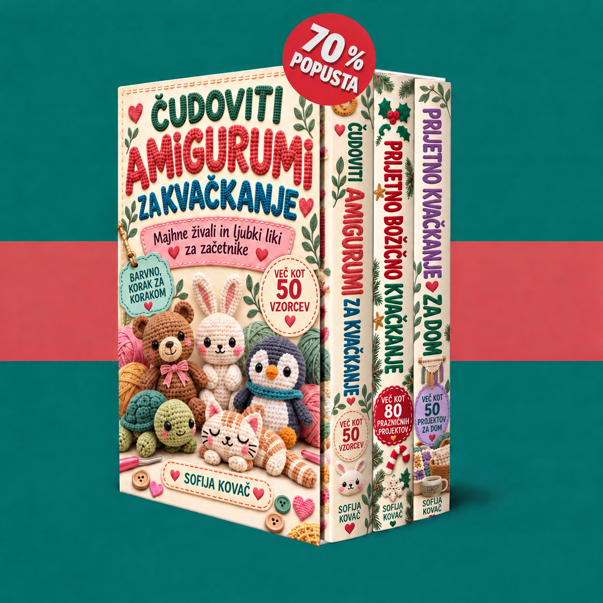

Dobrodošli v svoji zbirki. Raziščite tri knjige in začnite z majhnimi živalmi, božičnimi okraski ali prijetnimi projekti za dom.

Nalaganje knjig…
Omogočite JavaScript za uporabo članskega območja. Datoteke PDF lahko odprete tudi prek spodnjih povezav.